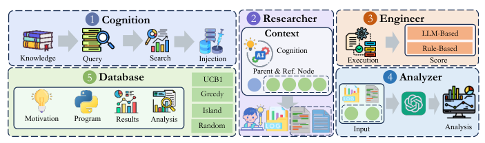
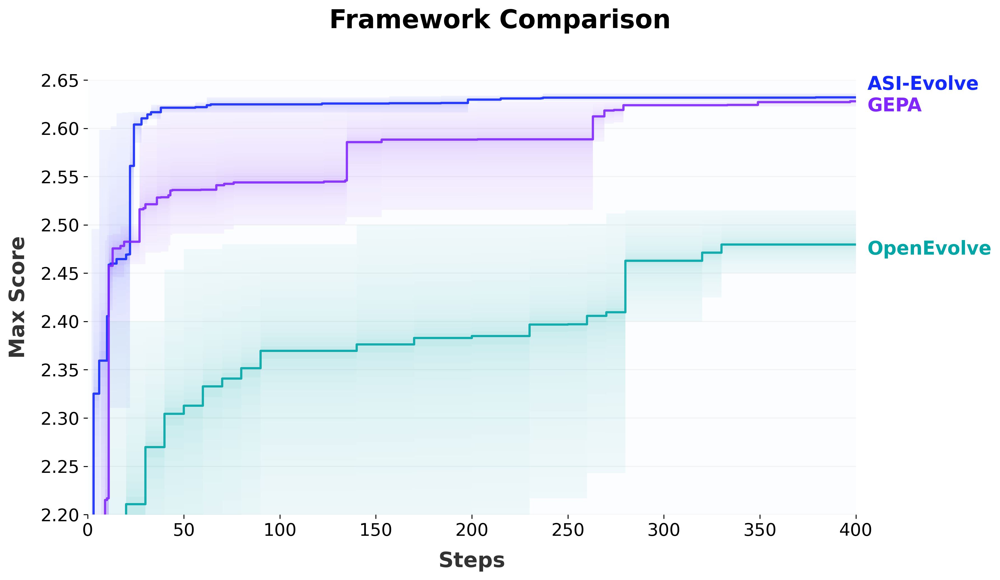

ASI-Evolve: AI Accelerates AI — Evolving Data, Architectures, and Learning Algorithms
Paper: arXiv 2603.29640 (v1, Mar 31 2026; 19 pages, 6 figures, 6 tables), by Weixian Xu (lead), Tiantian Mi, Yixiu Liu, Yang Nan, Zhimeng Zhou (core contributors), Lyumanshan Ye, Lin Zhang, Yu Qiao, Pengfei Liu (corresponding) — Shanghai Jiao Tong University / Shanghai Innovation Institute / GAIR. Code Apache-2.0 at github.com/GAIR-NLP/ASI-Evolve. Grounded in the full arXiv HTML text including Appendix A, plus the repository.
TL;DR
- A standard evolutionary coding agent plus two additions: a cognition base of hand-curated human priors retrieved by embedding search each round, and a dedicated Analyzer that reads the full raw logs of each experiment and writes a compact decision-oriented report back into the database. The claim is that these are what let evolutionary search survive at high \(L_{\text{task}}\) — expensive trials, open-ended space, multi-dimensional feedback.
- Three headline demonstrations, each a real training run. Architectures: 1,773 rounds produce 105 linear-attention designs beating DeltaNet at verification scale; the best, validated at 1.3B/100B tokens, scores 52.01 overall vs DeltaNet's 51.04 (+0.97), ~3× Mamba2's +0.34. Data: an evolved Nemotron-CC curation pipeline yields +3.96 average over 18 benchmarks at 3B/500B tokens, with +18.64 MMLU. RL: 300 rounds beat GRPO by +12.5 AMC32, +11.67 AIME24, +5.04 OlympiadBench at 14B.
- The controlled evidence is thinner than the demonstrations. On circle packing it hits SOTA in 17 rounds versus OpenEvolve's 460 — but the cognition base handed to it contains the target score, the winning method, and a scipy-level plateau-breaking checklist. And GEPA closes to within ~0.005 by step 350: the advantage is cold-start speed, not ceiling.
Why this matters
Everything else in the self-improving cluster optimizes an artifact whose evaluation is cheap — a harness, a prompt, a kernel, a proof script. ASI-Evolve is the first system in this tracker where a single fitness evaluation is a model training run: hours of GPU per architecture candidate, a 3B/500B-token pretraining run to score a data-curation strategy, a 14B RL run to verify an algorithm. With a total budget of 1,773 trials — against the 3.1M rollouts the Berkeley harness study spent on cheap objectives — sample efficiency stops being a nicety and cold start dominates, which is precisely the gap the cognition base fills.
For a TTT-for-code-optimization program this is the far end of the design space, useful mostly as a contrast class. It shows what an evolutionary loop looks like when human priors substitute for missing rollouts, and demonstrates — inadvertently — how hard a fair budget-matched comparison becomes once an unbounded hand-authored prior is inside the system. That accounting problem is why to read it alongside the repeated-sampling critique.
The core idea
The paper's organizing device is Scientific Task Length,
where \(C_{\text{exec}}\) is compute and engineering cost per trial, \(S_{\text{space}}\) is how open-ended the solution space is, and \(D_{\text{feedback}}\) is how hard it is to extract an actionable signal from an outcome. Existing evolutionary systems — AlphaEvolve, FunSearch, OpenEvolve, GEPA, ShinkaEvolve — sit at high \(S_{\text{space}}\) but low \(D_{\text{feedback}}\): each trial edits a short function and returns a clean scalar. Push \(C_{\text{exec}}\) and \(D_{\text{feedback}}\) up together and the loop breaks twice over — you can't explore blindly, and you can't act on a raw log dump.
Hence the two components. Cognition attacks \(C_{\text{exec}}\) by importing what humans already know, so the system doesn't re-derive documented failure modes. The Analyzer attacks \(D_{\text{feedback}}\) by turning logs, benchmark breakdowns and training dynamics into a short causal report before the next round reads them. The paper's framing: prior work evolves candidate solutions, "ASI-Evolve evolves cognition itself."

Figure 2 from the paper: each round retrieves cognition items by embedding search, samples parent and reference nodes (UCB1 / greedy / island / random), generates a candidate, runs an experiment-specific evaluator under timeouts, and stores an analysis report back into the database.How it works
Search runs over program space \(\mathcal{P}\). The system holds a database \(\mathcal{D}\) of nodes (motivation, code, results, analysis, score, metadata) and a cognition store \(C\) of text items indexed by embeddings. Each round:
with \(S_t\) the sampled context nodes and \(R_t\) the cognition items retrieved by semantic search over those nodes' analyses or motivations — the retrieval query is the search state, not the task description.
Researcher generates a full program plus a natural-language motivation (diff editing is an option for larger codebases). Engineer runs a user-supplied evaluator returning structured metrics with a primary scalar, with wall-clock limits and quick tests for early rejection plus an optional LLM judge. Analyzer receives the program and the complete experimental output and emits a compact report — full exposure at analysis time, compression at retrieval time. Database exposes UCB1, greedy, random, and island MAP-Elites behind one interface.
Per-scenario machinery. Architecture search adds three task-specific agents: a static check agent verifying complexity bounds, chunk-wise structure and causal-mask correctness before training starts; a debug agent reading error traces; and a novelty check rejecting proposals whose motivation is too similar to existing ones. It runs a three-stage ladder: exploration at ~20M params (8 layers, d=256) for 2000 steps on 1B tokens over 10 core benchmarks; verification at ~340M (24 layers, d=1024) on 1B tokens plus causality tests; validation at ~1.3B (24 layers, d=2048) on 100B tokens over 16 benchmarks, 6 held-out OOD. Fitness is composite — sigmoid-normalized loss and benchmark metrics plus LLM-judge scores for complexity, efficiency and innovativeness — and a candidate must exceed baseline on both.
Fitness differs per scenario, which matters. RL algorithm design drops the sigmoid for a linear weighted sum. Data curation uses no downstream benchmark at all: the Engineer applies a strategy to 500 sampled documents and the Analyzer scores 50 (original, cleaned) pairs 1–10 plus coverage and executability diagnostics.
The rest of the config (Appendix A, circle-packing and ablation runs): GPT-5-mini at temperature 0.7 with 32,768 max tokens, or Qwen3-32B at 0.6 with thinking enabled and 65,536; full-file generation, max code length 100,000, 3 retries; database capped at 70 nodes, MAP-Elites over 5 islands with features {complexity, diversity}; 384-dim sentence-transformer embeddings with web search disabled; 3 runs per condition.
# ASI-Evolve: one learn-design-experiment-analyze round (Sec. 3 + Appendix A)
init: database D = { seed program node }
cognition C = embed(human priors) # 12 items (circle packing);
# ~150 from 100 papers (architecture);
# 10 papers (RL); ~80 papers (DTI)
for t in 1..T: # T = 17 (circle packing) .. 1773 (arch)
# 1. LEARN
S_t = Sample(D, n=3) # ucb1 (c=1.414) | greedy | random | islands
R_t = Retrieve(C, query = motivations/analyses of S_t, top_k=5, thresh=0.4)
# 2. DESIGN (Researcher)
(p_t, motivation) ~ LLM(task_spec, S_t, R_t) # full file, or diff over a parent
if static_check(p_t) fails: debug_agent(p_t) # arch: complexity bound,
# chunk-wise form, causal mask
if novelty(motivation, D) too low: reject # arch only
# 3. EXPERIMENT (Engineer)
if quick_test(p_t) fails: reject before the expensive run
metrics = run(eval_script, p_t, timeout=300s, retries=2, workers=4)
score = fitness(metrics [, LLM_judge(p_t)]) # sigmoid-normalised (arch)
# linear weighted sum (RL)
# judge-only 1-10 (data curation)
# 4. ANALYZE (Analyzer)
report = LLM(p_t, raw logs, all metrics) # full exposure -> compact report
D.append(node(motivation, p_t, metrics, report, score))
C.add(newly discovered issues) # data-curation task only
return argmax_score(D)
Results
Architectures (Table 1, 1.3B params / 100B tokens, 14 accuracy benchmarks split 8 development + 6 generalization). DeltaNet baseline: 55.76 dev / 44.74 gen / 51.04 overall. The five validated discoveries: PathGate-FusionNet 51.48, Content-SharpRouter 51.61, FusionGated-FIRNet 52.01 (the +0.97), Hier-GateNet 51.79, AdaMulti-PathGateNet 51.11. Human comparisons: Mamba2 51.38 (+0.34), and — notably — Gated DeltaNet at 50.46, below the DeltaNet baseline in this setup. The design theme across all five is adaptive multi-scale routing: hierarchical gates, learnable temperatures, sigmoid gates instead of softmax, dynamic gate floors preventing delta-path collapse. Provenance is the most interesting number here: across all 1,773 architectures, 51.7% derive from the cognition base, 38.2% from accumulated experience, 10.1% are novel — and among the 105 SOTA architectures, novelty falls to 6.6%.
Data curation (Table 2, 3B params / 500B tokens, 18 benchmarks). Nemotron-CC\(_{\text{ASI+}}\) (504B tokens curated from 672B) averages 44.13, against raw Nemotron-CC 40.17 (+3.96), DCLM 42.42, FineWeb-Edu 36.52, Ultra-FineWeb 36.29. The gains are concentrated: MMLU 27.49 → 46.13, CSQA 20.31 → 39.12, MedQA 26.77 → 40.25, MedMCQA 28.86 → 40.97. There are also regressions (HellaSwag 65.32 → 62.21, DROP 19.57 → 18.49, BBH 26.82 → 26.16), and DCLM still beats the evolved corpus on seven of the eighteen. The 2.93-point gap between the ASI and ASI+ columns is the paper's evidence that iterative refinement, not one-shot generation, does the work.
RL algorithms (Table 3, Qwen-3-14B-base, SIIRL framework, Skywork OR1 data). GRPO: Math500 82.0 / AMC32 67.5 / AIME25 20.00 / AIME24 20.00 / OlympiadBench 45.92. Best discovered: 85.6 / 80.0 / 29.58 / 31.67 / 50.96; three of five variants beat GRPO everywhere. Two mechanisms get detail: Pairwise Asymmetric Optimization replaces the group-mean advantage with an average of \(\tanh\)-normalized pairwise reward differences, adds sign-dependent asymmetric clipping over \([\epsilon_{down},\epsilon_{up}]\), and stochastically drops gradients on the highest-impact tokens; Budget-Constrained Dynamic Radius uses percentile normalization \((r-c)/s\) and enforces a global update budget
where \(A\) is the token's advantage, \(c\) its trusted update radius, and \(z_{cap}\) a pre-set cap — a hard bound on how far one token can move the policy.

Figure 3(a) from the paper: Qwen3-32B backbone, 3 runs each. ASI-Evolve exits cold start far higher, but GEPA converges to within roughly 0.005 by ~step 350 while OpenEvolve plateaus near 2.48 (values read off the figure — the paper reports no end-of-run table).Controlled comparisons (circle packing, 26 circles in a unit square). ASI-Evolve reaches 2.63597 in 17 rounds with GPT-5-mini + UCB1, against AlphaEvolve 2.6359, OpenEvolve 2.6343 in 460 rounds, SkyDiscover 2.6360 in 89. UCB1 beats MAP-Elites (79 steps for the same score) with lower variance — the authors attribute this to cognition already supplying the directional diversity MAP-Elites would enforce. Ablations, 3 runs each: No Analyzer starts high then plateaus with sporadic, less reproducible gains; No Cognition cold-starts slowly, then jumps and still reaches SOTA — cognition buys speed, not ceiling.
Cross-domain (Tables 5–6). Evolving from DrugBAN over 100+ rounds yields a Sinkhorn-attention / domain-marginalization / top-k-gating architecture with cold-start gains of +6.94 (unseen drug), +3.56 (unseen protein), +4.36 (both) — though that table compares only against DrugBAN, and on BioSNAP the discovered model (89.68 AUROC) trails the human ColdStartCPI at 93.39.
How it connects
- Rethinking Harness Evolution — the accounting this paper most needs. Its architecture results contain the required decomposition, unlabelled: the development benchmarks were the exploration fitness signal (at 20M scale), the 6 generalization benchmarks were held out entirely. Subtracting the Table 1 rows (arithmetic mine, the paper never states these deltas): the top model gains +1.52 on dev but only +0.25 held-out, and the best held-out gain by any of the five is +0.66. The search-set/held-out gap in miniature.
- AdaExplore — the same skeleton at the opposite end of \(L_{\text{task}}\): one domain, a millisecond-cost oracle, published per-task budgets, a released memory artifact. As a pair they bracket the trade — AdaExplore affords 200 trials per instance and needs no human priors; ASI-Evolve gets 1,773 total and buys the difference with a cognition base.
- AdaEvolve is cited by name in this paper's related work (arXiv 2602.20133); CORAL, SAGA and Darwinian Evolver vary the other axes — unit of selection, the goal, the mutation operators — where ASI-Evolve varies the prior and the feedback compressor. Frontis-MA1 is closest in AI4AI ambition and the sharpest contrast on openness: it released 5,758 executable MLE environments and a trained model where ASI-Evolve releases the framework and none of the headline experiments. See also OpenRSI in the tracker.
- Meta-Harness — converges on the Analyzer's premise and complicates it: it measures that raw-trace access (~10 MTok/iteration) beats scores-only by 15+ points and that LLM-written summaries don't recover the signal. ASI-Evolve's Analyzer is exactly an LLM-written summary, defended by its No-Analyzer ablation but never measured against raw-log access.
- Darwin Gödel Machine and AIDE² — ASI-Evolve evolves artifacts, never its own loop, so on Weco's RSI ladder it is Level 0: mechanism demonstrated, no measurement that the loop beats human R&D per dollar. The title promises more than the experiments test. SPADE and Evolving Benchmarks relax what it holds fixed — task distribution and evaluation. Background: AlphaEvolve, FunSearch and ShinkaEvolve are the direct ancestors, and AlphaEvolve's 2.635 sits inside this system's cognition base.
Critical take
- The cognition base is an unbounded prior, and on the one controlled benchmark it contains the answer. Appendix A lists all 12 circle-packing cognition items. Among them: "the benchmark target is sum-of-radii ≈ 2.635 (AlphaEvolve)"; "AlphaEvolve achieved 2.635 via constructor-plus-constrained-optimization; key insight is good geometric initialization followed by strict-constraint numerical refinement"; and a five-step plateau-breaking checklist naming SLSQP,
maxiter500–1000, multi-start counts, and differential-evolution-then-polish. "SOTA in 17 rounds" is re-derivation from a near-complete recipe, not comparable to AlphaEvolve or OpenEvolve without the same priors. - Baseline fit — budget. Per round: 1 Researcher call (32K–65K max tokens, thinking enabled on Qwen3-32B), 1 Engineer evaluation (300 s default timeout, 4 parallel workers), 1 Analyzer call over the full raw log — so ≥2 LLM calls per round, one potentially enormous. Rounds span 17 (circle packing) to 300 (RL) to 1,773 (architecture). No token counts and no GPU hours appear anywhere in the paper, and the underlying compute is staggering: 1,773 × (20M model, 2000 steps) plus 340M verifications plus 1.3B/100B-token validations; six 3B/500B-token pretraining runs for the data table; ~300 4B RL runs plus 14B verifications. As published, this baseline cannot be budget-matched.
- Baseline fit — feedback signal. Richer than anything else in this cluster: a scalar fitness from a user-supplied evaluator, plus complete raw logs and metrics routed to the Analyzer, plus an optional LLM judge folded into fitness. For data curation the fitness is judge-only with no downstream benchmark in the loop — which leaves the +18.64 MMLU jump unexplained, since nothing in the search ever saw MMLU. Any comparison must decide whether the challenger gets log-level feedback or only the scalar.
- Baseline fit — reproducibility. Framework good (Apache-2.0, ~850 stars, clean
pipeline/cognition/databaselayout, runnable demo, an agent Skill). Results poor:experiments/holds onlycircle_packing_demoandbest/circle_packing. None of the three headline pipelines, the 105 architectures, the evolved corpus, or the RL implementations are released; last push 2026-04-17. You can run the loop; you cannot reproduce the paper. - What a fair matched-budget comparison requires. (1) Budget the priors — hand your TTT method the same cognition items in-context, or run ASI-Evolve No-Cognition, which the ablation shows still reaches SOTA, just slower. Otherwise you are comparing a curated literature review against a cold start. (2) Match tokens, not rounds. "17 rounds vs 460" is exactly the accounting the repeated-sampling critique says manufactures winners; ASI-Evolve spends at least twice the calls per round of a single-proposer loop, with an Analyzer call that scales with log size. (3) Match the configuration. The 17-round headline is GPT-5-mini + UCB1; the framework comparison is Qwen3-32B + MAP-Elites; and the appendix concedes OpenEvolve was run with a single backbone rather than its usual fast/slow pair, which "may introduce bias relative to the best possible OpenEvolve configuration." (4) Read the curve to its end — by ~step 350 GEPA is within ~0.005 (read off Figure 3a). In the fixed-large-budget regime TTT usually occupies, a cold-start advantage is worth nothing.
- Statistical hygiene. Circle packing gets 3 runs per condition; the three headline results get none. The RL deltas are 3–4 problems on 30–32-problem benchmarks (+11.67 AIME24 = 3.5 of 30) with no intervals, and the methodology says 300 verification steps where Table 3's caption says 250. The architecture section says 1,350 candidates in one place and analyses "all 1773" in another, and "105 SOTA architectures" means 105 beating DeltaNet at 340M/1B tokens — five were tested at scale. The data result, likewise, is a knowledge-MC specialist that reads more like format and domain reweighting than a general quality gain.
If you remember three things
- The two additions do different jobs. Cognition buys cold-start speed and nothing else — No-Cognition still reaches SOTA, just later. The Analyzer buys sustained improvement — without it the loop starts high on cognition alone, then plateaus. If you port one idea into a TTT loop, port the Analyzer: structured causal reports written back into a retrievable store, full log exposure at write time, compression at read time.
- The headline results are demonstrations, not controlled experiments. Real training runs at real scale with real gains — but single runs, no seeds, no compute accounting, and a search-set/held-out gap the paper never names: computing it from Table 1 yields +1.52 on the benchmarks that were the fitness signal and +0.25 on the six held-out ones.
- As a baseline it is a contrast class, not a competitor. Before quoting "17 rounds to SOTA," check what is in the cognition base — on circle packing, the target score and the winning method. A fair comparison needs matched priors, matched tokens rather than rounds, matched backbone and sampler, and a budget long enough to see whether the cold-start advantage survives to the ceiling. It usually doesn't.